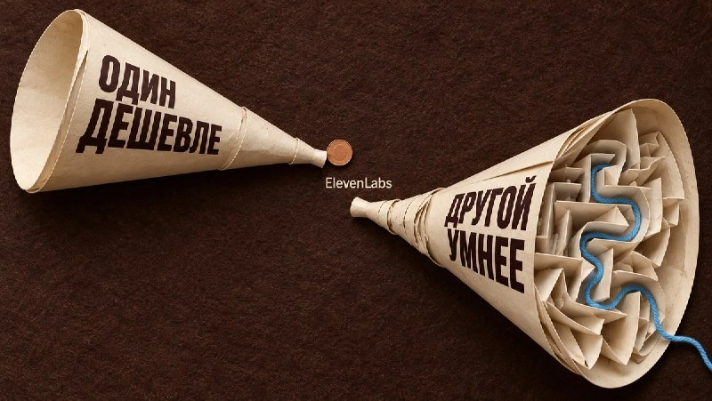

26 октября 2026

23 октября 2026

ElevenLabs выпустила двух голосовых ИИ: один дешевле, другой соображает лучше
Новости ИИСделать умного телефонного бота — целая наука. Сначала ему нужны уши, чтобы услышать клиента. Потом мозги, чтобы придумать ответ. И наконец рот, чтобы этот ответ произнести. А дальше начинается самое весёлое: заставить все три части работать вместе и не перебивать человека на
ElevenLabs представила переводчик, который позволяет разговаривать на разных языках
Новости ИИЯпонец говорит по-японски. Вы отвечаете по-русски. И оба прекрасно друг друга понимаете. Никто не просит повторить помедленнее, не лезет в Google Переводчик и не пытается объяснить сложную мысль тремя английскими словами из школьной программы. — систему, которая переводит
21 октября 2026

17 октября 2026
16 октября 2026

ИИ научили озвучивать целые сцены с разными персонажами
Новости ИИFish Audio выпустила Drama 3 — модель синтеза речи, рассчитанную на аудиокниги, диалоги и художественную

IBM объединила чат-бота, распознавание речи и принятие решений в одной модели
Новости ИИIBM представила Granite Switch 4.1 — открытое семейство моделей на 8 и 30 миллиардов

Голосовой ИИ научили выполнять действия прямо во время разговора
Новости ИИOpenAI добавила в GPT-Live встроенную интеграцию с Decisions
ElevenLabs научила ИИ озвучивать видеоролики
Новости ИИElevenLabs представила Instant Soundtracks. Теперь можно загрузить готовое видео, а нейросеть сама подберёт музыку, создаст звуковые эффекты и расставит их в нужных местах. Например, добавит звук удара при столкновении предметов или музыкальный акцент при смене кадра.

ChatGPT получил новую голосовую модель — разговоры обещают сделать естественнее
Новости ИИOpenAI начала внедрять GPT-Live-1.1 и её облегченную версию GPT-Live-1.1